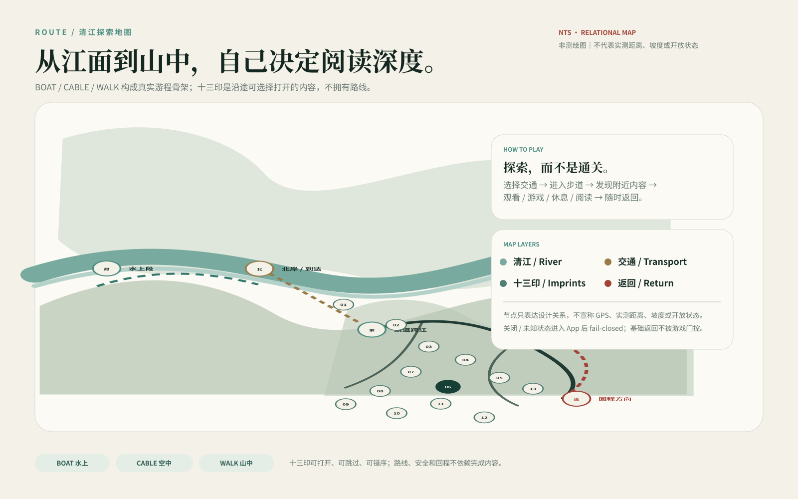
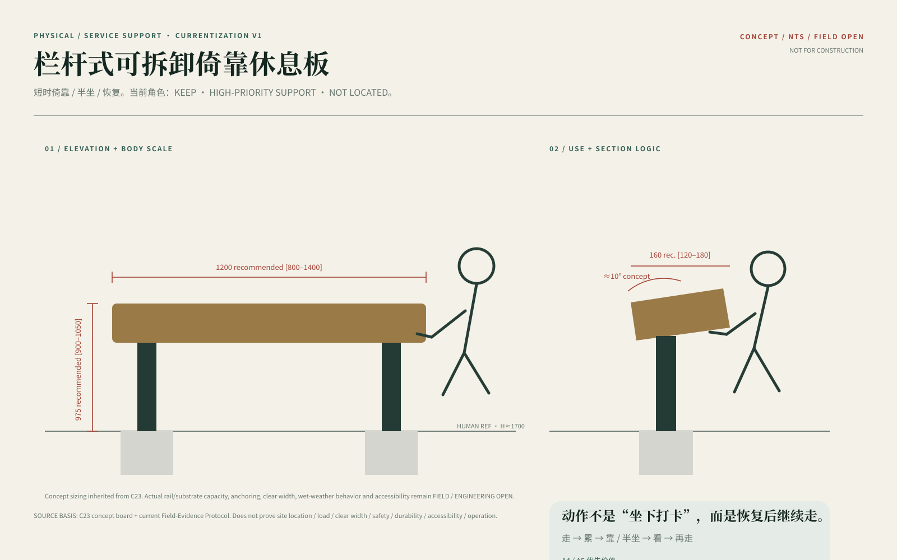
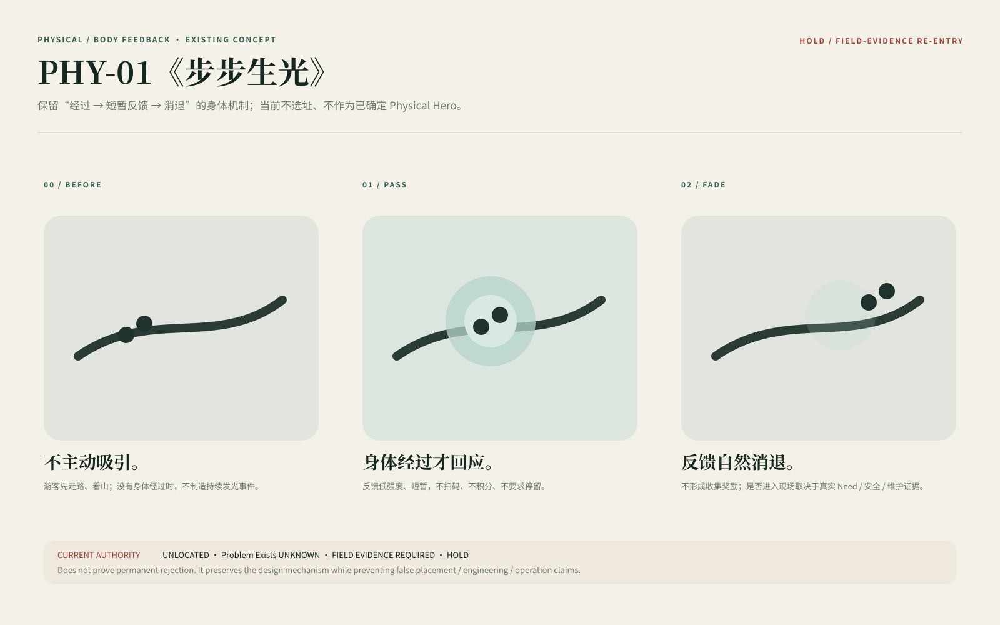
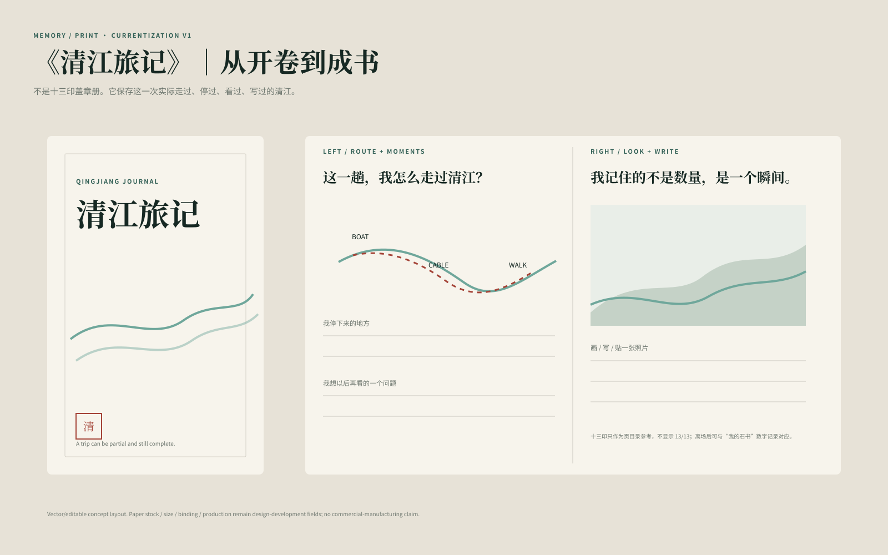
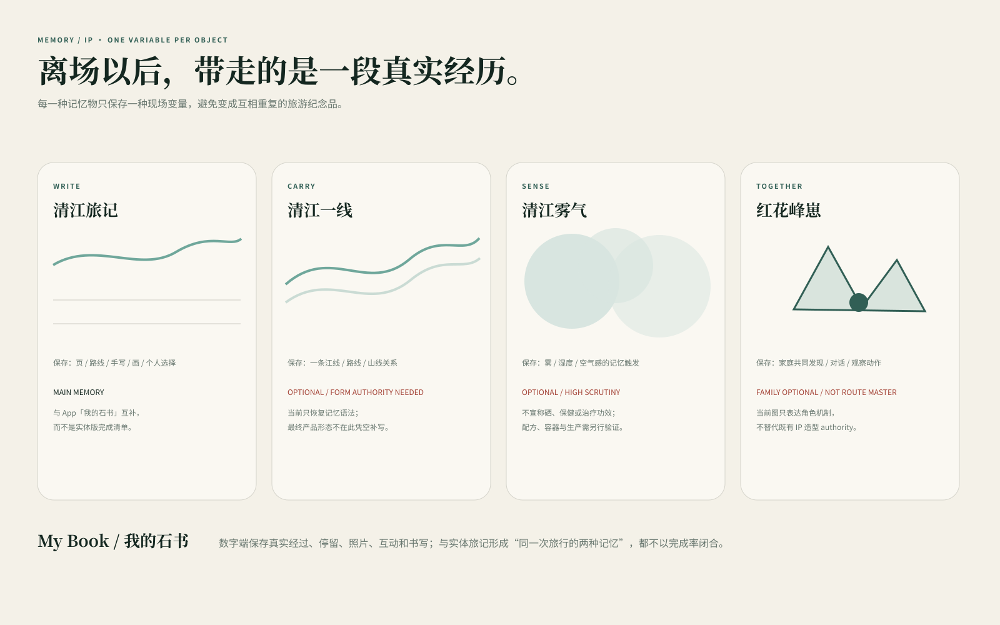

地方历史、人物和故事
廪君、盐水女神、地方命名与沿江生活可以被听见、被比较，但传说不替代史址证据。
从游船、索道到峰林步道，把地域文化、十三印、游戏地图、身体休息、数字阅读和离场记忆重新放回一次真实旅行里。内容可以选择，安全、路线和回程不依赖完成率。
文化不是独立“背景章节”，而是十三印、游戏内容、场景阅读与离场记忆的内容发动机。历史、地方故事、地名、传统山水观和自然观察分别进入适合它们的媒介。
廪君、盐水女神、地方命名与沿江生活可以被听见、被比较，但传说不替代史址证据。
先观察差异，再打开科学解释；未知物种、岩性、年代与成因保持开放。
作为传统环境认知与文化解释研究，不作为科学因果、精确选址或安全依据。
BOAT 是水面尺度，CABLE 是空中跨江，WALK 是身体进入山中。三种交通不是章节任务，而是同一趟旅行的空间变化。
江面、峡谷、声音、长距离观看。
首先承担交通与回程，其次改变观看尺度。
坡地、岩壁、植物、停留、疲劳与转折。
十三印、故事、观察、休息和个人轨迹可以被发现；路线、安全、关闭与返回始终保持真实服务主权。

地图为 NTS 关系示意，不宣称 GPS、实测距离、坡度或现场开放状态。正式上线前由 Field / Operator 信息替换当前关系槽位。
TODAY / ROUTE / READ / MY BOOK 形成游客端主结构；Service / Return 永久可达。手机有价值时出现，没有手机时主旅程仍成立。
确认路线与回程，然后按兴趣打开故事、观察和游戏。
看完整河谷 → 比较两岸 → 可选解释 → 休息 / 返回。
附近内容可打开、可跳过、可错序。
每一印对应一个具体的观看、文化、自然或身体问题。可以读、玩、跳过、以后再看。
儿童找江和峰形；青年用剖面判断相对位置；成人进入河谷与文化深读；长者先看到休息与回程。
R06 先让河谷成为第一阅读，再用剖面、模型和低占用休息支持把观看变成理解与恢复。

不数台地、不虚构精确剖面；先比较江、两岸、坡面和视野中的相对关系。
亲子：找江与峰形。青年：用简化剖面判断相对位置。成人：深读地形/文化。长者：先休息与返回。
栏杆式倚靠板只在真实疲劳转换段成立；C23 概念尺寸进入技术证明，位置仍未确认。
FIELD MEASURED=0。精确台地数量、标高、距离、坡度与节点地质仍保持开放。

进入岩隙/一线天类强空间后，不新增追逐、搜寻、计时或长解释。身体、光、岩壁与通过本身成为体验；数字只保留必要返回与状态支持。
儿童不设置追逐/搜寻任务；青年也不在狭窄处抢注意力。
通过 / 返回 / 风险边界优先；实际净宽、湿滑、照度、拥堵仍待现场。
P02 倚靠板进入高优先级支持；步步生光保留机制但当前 HOLD；山体流体休憩与清风吟继续单点竞争，不把“有设计”写成“已选址”。


清江旅记与“我的石书”分别承担实体和数字记忆；一线、雾气、清风吟、峰崽按各自只保存一种现场变量的原则继续竞争。


回程不是尾声，而是完整体验的一部分。系统减少新的深读入口，把路线、服务、纸图和个人记忆重新放到前面；UNKNOWN 不画成正常开放，CLOSED 不被游戏状态覆盖。